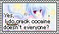
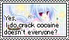

Welcome to my Blog!
For someone who doesn't speak much, I do have a lot to say sometimes.
This section is a space for me to write longer thinkpieces about whatever is on my mind or whatever's been going on in my life lately. Not really a diary, since one entry won't correspond to one day, and it might take me mutiple days or weeks to finish an entry.
Use the table of contents on the left page to browse through my entries.
As always, thank you for reading! —Anja ~ ♪